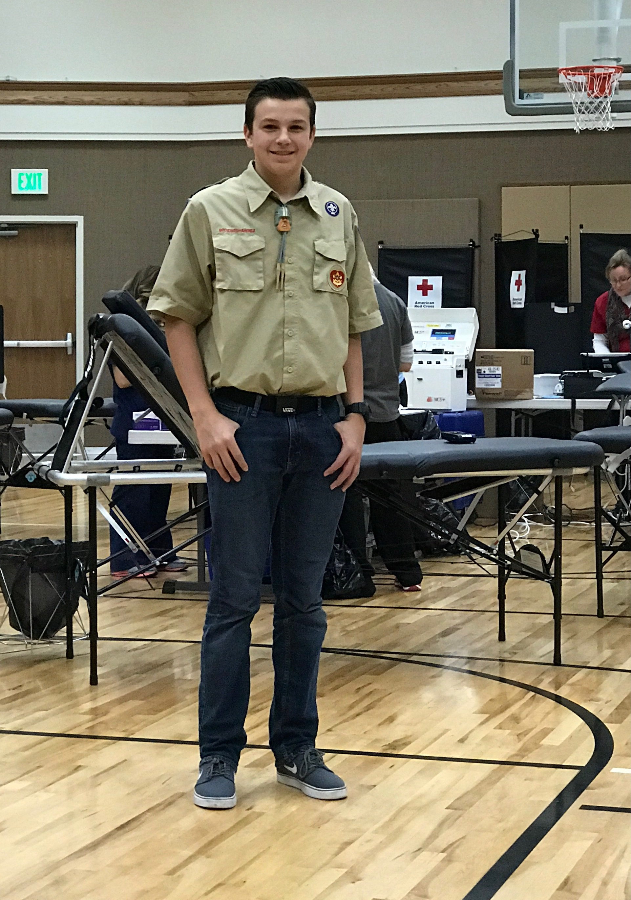

Accomplishments
Eagle Scout - 2017
To earn my Eagle Scout award I had to complete 21 merit badges (some of which took 3+ months to complete) and complete an Eagle Scout project. The goal of any Eagle Scout project is to do something that benefits others in a positive way while also building leadership skills in the scout doing the project. For my Eagle Scout project, I coordinated and carried out three blood drives for the American Red Cross, collecting 100 units of blood. Throughout the course of the project I had the opportunity to work with representatives from the American Red Cross to plan for use of facilities and advertising for the drives. I was also able to do a lot of networking to recruit people to come and donate blood. I would go to various different church congregations and ask for a few minutes at the beginning of Sunday school to tell people about the drive and pass around a sign up sheet. I would then call the people who signed up the day before the drive to remind them about it. Overall, it was a very successful Eagle Scout Project and I learned a lot about leading and working with others.



Spanish Seal of Biliteracy - 2019
Between junior high and high school, I took 4 years of Spanish language classes. In my fourth year of Spanish language class I took the STAMP language proficiency test to certify that I had attained a proficient level of Spanish language skills including reading, writing, listening, and speaking. I passed with flying colors and earned the Spanish Seal of Biliteracy on my high diploma, certifying that I was literate in both the English and Spanish languages.